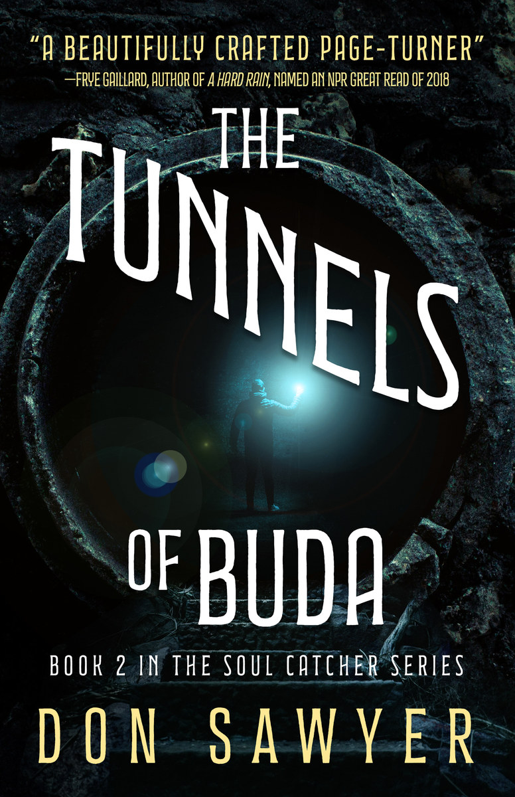

Our Catalog / The Tunnels of Buda (Soul Catcher Book 2)

The Tunnels of Buda (Soul Catcher Book 2)
“In this beautifully crafted page-turner set in an imaginary world just beneath our feet, Don Sawyer has given us a deeply entertaining story of magic, ancient evil and the ability of love, courage and hope to overcome it. He reminds us of the power of imagination and fantasy to probe deeper questions of justice, sustainability, and belonging.” -- Frye Gaillard, author of The Cradle of Freedom, winner of the Lillian Smith Book Award, A Hard Rain, named an NPR Great Read of 2018; and The Southernization of America, an NPR Best Book of 2022
"The Tunnels of Buda — the second instalment in Don Sawyer’s Soul Catcher series — is a fabulous sequel to The Burning Gem. The novel’s propulsive plot and mysterious settings — including a maze of shifting catacombs beneath the ancient palace of Budavári Palota — along with its wide cast of nuanced characters, make for an exhilarating ride as Zoltan and Barbara team up to attempt the overthrow once and for all of the tyrannical cabal known as The Company. Which will prevail: their belief in the power of love and freedom, or The Company’s cynical doctrine that humans must be “managed” for their own good? The Tunnels of Buda makes this epic showdown — one very relevant to our own market-driven society — the centre of its compelling narrative."-- Mark Morton, author of The Headmasters
Don Sawyer's THE TUNNELS OF BUDA, the second romantic fantasy thriller in the Soul Catcher series, in which a magical gem maker and an empath struggle against a hideous conspiracy of evil headquartered in a maze of fantastic tunnels deep below Hungary's Buda Castle.
The Mester is dead or maimed and the black stone used to control his network of gem makers is in Barbara and Zoltan’s hands. But as Zoltan discovered in the ruin bars of Budapest from a former associate, who turned up beheaded and his hands cut off, the Mester was just a small part of a much larger cabal, an ancient Order dating back to Aristotle and beyond. The Order has one goal: to convince the populace that there are masters divinely intended to rule and slaves meant only to obey.
Using magic and sorcery, both ancient and modern, they will stop at nothing to protect the rule of the aristoi.
But this time the “slaves” are fighting back, drawing on the knowledge and skills from many traditions and backgrounds, including magic of their own, to battle this shadowy cabal and its message of fear, division and hopelessness.
In The Tunnels of Buda Zoltan, the 110-year-old gem maker and Barbara, empath and gem wielder, veer in new and terrifying directions, facing evil on an unimagined scale. They are drawn to the lair of the Justin, so powerful he controls the minds of all around him and who commands the Company, a hidden underground futuristic complex that serves as the hub of the Order’s monstrous conspiracy to enact the darkest of Nietzsche’s Weltanschauung.
Barbara and Zoltan find new allies and diabolical enemies as they fight for their lives in the mines and ancient tunnels deep below Buda Castle in Budapest.